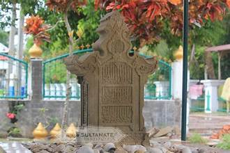

Perkembangan Islam di wilayah Indonesia tidak lepas dari permulaan Islam di Indonesia. Dalam beberapa buku, dijelaskan bahwasanya hadirnya Islam di Indonesia, tetapi dahulu disebut Nusantara, terdapat beberapa teori.
Teori Gujarat adalah Teori yang paling populer dan menyebut islam dibawa oleh pedagang dari Gujarat di India. Di samping melakukan perdagangan, mereka dipercaya melakukan penyebaran agama Islam khususnya di kawasan Selat Malaka. Berdasarkan teori ini, Islam masuk ke Nusantara sejak abad ke 7 Masehi. Teori ini pertama kali diperkenalkan oleh Pijnapel (seorang ilmuwan Belanda melakukan dan mendapatkan dukungan dari Christian Snouck Hurgronje).
Ada bukti penemuan yang membenarkan teori ini. Penemuan ini sudah dibahas oleh Moquette seorang ilmuwan yang ikut mengembangkan teori ini pada tahun 1912. Adapun penemuan relevan dengan teori ini di antaranya pernyataan dari Marcopolo, sosok yang berasal dari Yenesia Italia, pernah menyampaikan ada penemuan nisan Sultan Malik As-Saleh di Pasai, Sumatera Utara. Bukti penemuan berikutnya yaitu adanya inkripsi tertua yang menguraikan tentang hubungan Sumatra dengan Gujarat.

Teori ini menganggap bahwa perkembangan Islam terjadi sebagai dampak dari perdagangan yang dilakukan pedagang Persia. Hal ini karena Indonesia merupakan kepulauan yang potensial sebagai tujuan berdagang. Sumber-sumber terkait teori ini mengungkapkan bahwa perkembangan Islam dimulai antara 7 hingga 13 Masehi. Adapun pencetus teori masuknya Islam ke Indonesia adalah Profesor Umar Amir Husein dan Profesor Husein Jayadiningrat.
Menurut pendapat mereka, Islam mendarat pertama kali di Sumatra. Terdapat beberapa bukti pendukung yang ditemukan dalam manuskrip maupun budaya masyarakat. Adapun beberapa bukti yang dimaksud yaitu:
PERTAMA: Perayaan dan tradisi masyarakat Islam Persia mempunyai sejumlah perayaan budaya yang tidak jauh beda dengan perayaan di Indonesia. Contohnya upacara tabuik di Bengkulu yang biasanya di Persia menjadi hari untuk mengenang Husein bin Ali yaitu cucu Nabi Muhammad SAW. Juga acara maulid lomponga di Cikoang yang serupa dengan hari Asuro di Persia.
KEDUA: Kosakata yang mirip. Selain itu, pencetus teori ini menunjukkan bahwa ada kemiripan dari segi kosakata antara bahasa persia dan bahasa melayu.
Teori ini dimulai dari Dinasti Teng 618-905 M. Bermula dari kantor daerah yang penduduknya mayoritas beragama Islam. Daerah ini berada di bagian China Selatan. Pendapat lain yang mengatakan bahwa dulu Islam dibawa oleh panglima Muslim bernama Sa'ad bin Abi Waqash yang berdakwah pada masa khalifah Utsman bin Affan. Teori ini dikembangkan oleh Sumanto al Qurthubi ia menjelaskan bahwa penyebaran agama islam yang dilakukan cina dilakukan melalui perkawinan terhadap warga lokal.
Hal ini dilakukan oleh pendatang China saat menetap lama di Indonesia dalam mendukung yang dicetuskannya Sumanto telah mengumpulkan beberapa bukti yang menunjukkan bahwa Islam dibawa oleh para pedagang China. Beberapa bukti adalah sebagai berikut:
Pertama: Komunitas Cina. Dalam Islam di China, Jean A.Berlie menjelaskan bahwa di Palembang terdapat suatu komunitas Muslim China pada 879 Masehi. Komunitas yang berisi orang asli tetapi beragama Islam ini konon merupakan warga China yang bermigrasi dari Kanton ke Asia Tenggara.
Kedua: Raja Islam keturunan Tiongkok di Jawa. Ada sebuah kerajaan Islam yang dipimpin oleh seorang raja keturunan Tiongkok ia adalah Raden Fatah yang memimpin Kerajaan Demak ia merupakan raja pertama.
PERTAMA: Teori Arab atau Teori Mekkah menyatakan bahwa Islam masuk ke Indonesia langsung dari Jazirah Arab sejak abad ke-7 Masehi, bersamaan dengan berkembangnya Islam di Timur Tengah. Teori ini menegaskan bahwa para pedagang dan ulama Arab berperan penting dalam proses awal islamisasi di Nusantara. Sejak sebelum Islam lahir, bangsa Arab telah menjalin hubungan dagang dengan wilayah Asia Tenggara, termasuk Indonesia.
Setelah Islam berkembang, para pedagang Arab Muslim tetap melakukan aktivitas perdagangan sambil menyebarkan ajaran Islam. Wilayah pesisir seperti Aceh, pantai barat Sumatra, pesisir utara Jawa, Kalimantan, dan Sulawesi menjadi daerah pertama yang menerima pengaruh Islam karena merupakan pusat perdagangan internasional.
KEDUA: Teori Arab didukung oleh berbagai bukti sejarah dan budaya. Catatan Cina dari masa Dinasti Tang menyebutkan adanya permukiman pedagang Arab Muslim di wilayah Sumatra pada abad ke-7, yang menunjukkan bahwa Islam telah dikenal lebih awal di Nusantara. Selain itu, mayoritas umat Islam di Indonesia menganut Mazhab Syafi'i, yang berkembang di Mekkah dan Madinah, sehingga memperkuat dugaan bahwa Islam masuk langsung dari Arab.